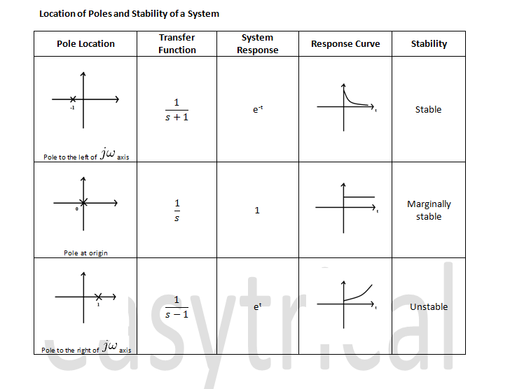
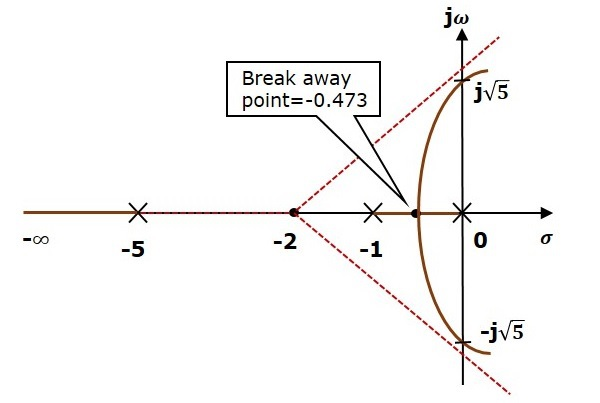

📉 Stability Analysis
Stability in control systems ensures that the output remains bounded for any bounded input. A stable system does not exhibit uncontrollable oscillations or grow unbounded over time.
✅ Key Concepts
- BIBO Stability: Bounded Input → Bounded Output
- Pole Location: Stability is determined by the location of poles in the s-plane
- All poles in left half-plane → Stable
- Any pole in right half-plane → Unstable
- Pole on jω-axis (imaginary) → Marginally stable

Figure: Relationship between pole location and system stability.
📐 Routh-Hurwitz Criterion
This is a mathematical test to determine stability without solving for roots of the characteristic equation.
- Construct Routh array from characteristic polynomial
- Count sign changes in the first column
- No sign change → Stable system
- Each sign change → One right-half-plane (unstable) pole
Example: Characteristic equation:
s^3 + 4s^2 + 6s + 8 = 0
Routh Array:
s^3 | 1 6
s^2 | 4 8
s^1 | (4*6 - 1*8)/4 = 4 0
s^0 | 8
No sign change in the first column →
Stable
📍 Root Locus Method
Shows how system poles move in the s-plane as a parameter (usually gain K) varies. This helps in controller design and stability prediction.

Figure: Example root locus for a second-order system.
⚙️ Nyquist Criterion
Used in frequency-domain analysis to assess closed-loop stability. Involves plotting the Nyquist plot of the open-loop transfer function.
- Encirclement of point (−1,0) indicates instability
- Helps with systems having time delay or higher order dynamics
Nyquist and Bode plots give insight into both stability and robustness.
🌀 Animation: Pole Migration
This animation illustrates pole migration across the s-plane. When poles move rightward → instability.
🧪 Quiz Yourself
Q1: What does a sign change in Routh array's first column indicate?
Answer: One right-half-plane pole → instability.
Q2: What is the condition for BIBO stability?
Answer: All poles must lie in the left-half s-plane.
Q3: What is the purpose of Root Locus?
Answer: To observe how system poles shift with varying gain.